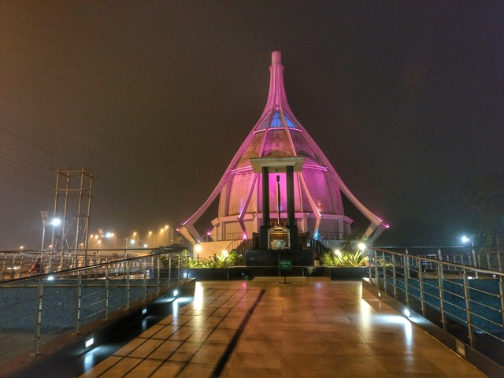
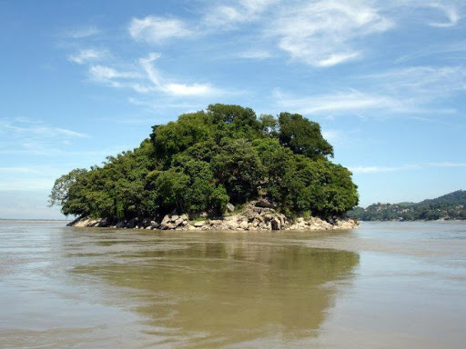

1) KAMAKHYA TEMPLE:
Located on the Nilanchal Hill in the western part of Guwahati in Assam, Kamakhya Temple is one of the most revered shrines of Goddess Shakti in India. According to the Hindu scriptures, there are four important Shakti Peethas (Temples with highest powers of divinity) in the country and Kamakhya Temple is one of them. Kamakhya Temple celebrates the power of the woman to give birth and is regarded as extremely auspicious among the followers of the Tantrik sect of Hinduism. It was built and reconstructed multiple times between the 8th and 17th Centuries and is a spectacle in itself. The main entrance of the Kamakhya temple is beautifully designed with simple yet elegant carvings that are decorated with colourful flowers. The temple has a massive dome which overlooks the quaint Nilanchal Hills in the background. It is especially decked up during the Ambubachi Festival and fare that is held for 3-4 Days in the month of June. SHOW IN MAP
2)UMANANDA TEMPLE
:Umananda Temple is located on Peacock Island that lies on the mighty Brahmaputra River. This serene place of worship is named after and dedicated to Lord Shiva. The name 'Umananda' comes from the two Hindi words, namely 'Uma', which was another name for Lord Shiva’s wife and 'Ananda' which means happiness. In fact, Peacock Island is one of the smallest inhabited island and possibly one of the most beautiful too. The surroundings of the temple and the divine but understated beauty of the island make it a haven for nature lovers. The temple is situated on the top of a hill called Bhasmakala or Bhasmakuta. The island was originally built in 1694 A.D. by King Gadadhar Singha. However, it was destroyed by an earthquake in 1897 and later rebuilt by a wealthy local merchant. The Umananda temple was crafted beautifully by the skilled Assamese workmen. Aside from Lord Shiva, there are 10 other Hindu Gods whose idols reside in the shrines. Aside from being a place of worship, The Umananda temple is also a pleasurable exception to the typical places of worship. Devoid of the cacophony of forceful religion, this place has a serene environment which makes you want to sit down for a while and absorb the beauty of the place. SHOW IN MAP
3) SRIMANTA SANKARDEV KALAKSHETRA:
Srimanta Sankaradev Kalakshetra commonly Kalakshetra is a cultural institution in the Panjabari area of Guwahati, Assam, named after the medieval poet-playwright and reformer Srimanta Sankardev.[2] It includes a cultural museum, library and various facilities for preserving, demonstrating and performing cultural items, besides a children's park. In addition to being Northeast India's largest cultural congregation, the Kalakshetra is also a major tourist spot in Guwahati. Built in the 1990s, the artistic excellence of Assam and rest of the north-eastern region is displayed here. There are eateries, places of worship, emporiums and open-air theatres within the sprawling Kalakshetra premises. SHOW IN MAP
4) ASSAM MUSEUM:
Assam State Museum, also known as Assam Rajyik State Museum, is located in the heart of Guwahati city in Dighali Pukhuri tank. It is one of the most famous museums of the North- East India that gives insights into the rich culture of ancient history and as well as the modern history of North-East India. Its prominent location in the center of the city attracts a large number of history buffs and tourists visiting Guwahati. The museum was established during the colonization of British in India in the year 1940. It was set up by the Kamarupa Anusandhan Samiti, Assam research society to showcase the history, sculptures, and handicrafts of North East India. The museum was developed under the presidency of Kanklal Baruah, and it was taken by the state soon after his death in the year 1953. The Museum offers an extensive collection of artifacts and sculptures dating back to the 5th-12th century to the new artifacts from the World War II. This museum is a great place to visit if you want a sneak-peak of the history of the North-east India. SHOW IN MAP
5) SILK LOOM IN ASSAM:
There has been a tremendous change in the socio-economic scenario of the silk loom sector as a whole. The sector that had once attained global recognition and accreditation because of its uniqueness, beauty, artistic work has now lost its identity, charm and has failed to meet the requirement in the global market due to various factors. Efforts from the state as well as the central government along with the owners of the silk loom industries are necessary to save this heritage sector. The increase in wage is considered to be the most important matter as low wage has been identified as the major problem of the weavers to maintain their livelihood. The government can subsidise the sector by providing credit, building necessary social, economic and financial infrastructure, arranging marketing campaigns worldwide. There should be the provision for loans with low interest rate for the explorations workers. Promotion of marketing of indigenous Assam silk products in the local as well as in the global market is necessary to give the sector a boost .Protection of the weavers and the sector should be identified as one of the major agenda. They must get the benefit of various acts of the government for protecting the interest of workers. Sualkuchi has to depend for raw materials from outstation markets which are costly. Therefore, the government should monitor the price by putting a standard level for all the goods and materials so that it will be accessible to the owners and weavers at an affordable budget. There is also an urgent need to put a ban on the selling of cheap materials imported from other places in the name of original silk products, because these low quality machine-made materials have brought defamation to the traditional silk loom sector. This has led to loss of work for many weavers. It is also very important to improve the relationship between the owners and the workers in this sector. Proper health and education facilities should be there for the workers and their children. Establishing cooperative societies for the workers, providing salary on time, training, funding, supply of raw materials, creating more employment opportunities and ensuring regular work in the sector, ensuring better work environment are viewed as important factors for the overall development of the sector and livelihood of the workers. SHOW IN MAP
6)SARAIGHAT BRIDGE:
Saraighat Bridge is the first of its kind a rail-cum-road bridge built over the river Brahmaputra in Assam. Saraighat Bridge is the vital link between North East region and the rest of the country. Built immediately after the Indo-Chinese war it has already completed 50 years of its existence in 2012. The bridge has a national highway on top and railway tracks below. National highways 31 & 27 run on this Bridge to and from Guwahati. Total length of this bridge is 1492 meters (about 1.5 Km). The Saraighat Bridge is one great place to hang-out if you wish to view the River Brahmaputra in all its glory. The pleasure of standing in the middle of the Bridge and view the Brahmaputra River in 360 degrees is unexplainable. For the photographers it is going to be a real treat since it provides awesome angles of the river, especially at sunset. After visiting the Saraighat Ghat, go on a ferry ride from Guwahati underneath the bridge. In Guwahati River Cruises on River Brahmaputra is quite popular among tourists and locals. You have two main options, either venture out for a few hours on the river or take a full-blown cruise on the Brahmaputra. SHOW IN MAP
7)GUWAHATI PLANETARIUM:
: Guwahati Planetarium is one of its kind centre of astronomical education and research in Assam and the entire North-Eastern region of India. The Guwahati Planetarium is unrivalled in Assam and rest of northeast India with its distinctive dome and sloping walls that sets it apart in the skyline of the area. The Planetarium uses the Japanese Goto instrument. The hardware includes the Chronos starfield projector, Digital HD video projectors, and the Dolby sky theatre's sound system. The show software is also supplied by Goto.Besides daily shows, the Planetarium also regularly organises seminars, workshops and conferences for the astronomy fraternity, and exhibitions, quizzes and outdoor viewing facilities during eclipses for students and the local community.Facilities at the Planetarium include a library.The Guwahati Planetarium, is a sincere attempt to reach the young and scientifically inclined minds and provide them a glimpse of the available treasure trove assembled over centuries by the human explorers. Apart from the regular Sky watching sessions conducted by the experts at the planetarium, special shows projected on a dome shaped overhead screen are the star attraction of the Planetarium. These shows are available in Assamese and in English and the timings are as convenient with enough entertainment at the planetarium museum and Science section to keep enthusiasts busy.The Planetarium[1] has a unique hybrid planetarium projection system, the first one of its kind in the entire northeast region. It is the second planetarium in India to get such a system, the first one being New Delhi Planetarium.Apart from the projection system, an astronomical gallery is soon going to be launched by the Creative Museum Designers(CMD) at the planetarium. The state science and technology department has already released funds for the upcoming project. SHOW IN MAP
8)VASISTHA ASHRAM:
: Vashistha Ashram, located in the Sandhychal hills, is an important pilgrimage centre. Constructed in the second half of the 18th century, the temple was built by the Ahom king, Raja Rajeswar.This ashram is the last existing monument, which was constructed by the rulers of the Ahom dynasty. The ashram is the meeting point of three rivulets namely, Sandhya, Kanta and Lalita.According to a popular belief, it is said that a dip in the water enhances a person’s life and also washes off the sins committed. In addition, there are several legends associated with sage Vashistha and this ashram.According to one of the popular legends, it was said that the hermit Vashistha used to perform his ‘sandhya’ in a stream near his ashram, which was also his home. The sage became agitated due to the ardent games played by Lord Indra with his queen Shachi and other heavenly women in the stream, as the water became impure.As a result of this, the sage cursed Indra that he would have sexual contact with a Daitya woman. This curse transformed Indra into a normal person and the curse of Vashistha also came true.However, Lord Indra granted the Daitya woman with a blessing that her son would become a king. Her son later became the progenitor of the Ahom Kingdom and was the ruler of the entire region of Assam. According to another legend, it is believed that the sage gained spiritual success by dwelling into the secrets of Sakta practices. SHOW IN MAP
9)NEHRU STADIUM:
Nehru Stadium, is a multi-purpose stadium in Guwahati, Assam, India and managed by the Board of Sports, Government of Assam. Radha Govinda Baruah supervised, constructed and named the stadium as Nehru Stadium. It is used both for football and cricket matches. The stadium holds 15,000 people at most and was built in 1962. So far it hosted 13 One Day Internationals matches and many matches of top domestic cricket tournaments like Ranji Trophy, Duleep Trophy and Deodhar Trophy. In football it regularly hosts prestigious Bordoloi Trophy and GSA Super Division League. The stadium also hosted Santosh Trophy and Federation Cup tournaments. SHOW IN MAP
10)ASSAM ZOOLOGICAL CUM BOTANICAL GARDEN:
: The Assam State Zoo and Botanical Garden is located near RG Baruah Road. Sprawling over an area of 130 hectares, it is the only zoo where there is a natural forest. On the other hand, the botanical garden is located within the same vicinity, which is also known as Guwahati’s green retreat.Rich in flora and fauna, this zoo and botanical garden is also home to some of the rare and endangered species of wildlife. Swamp tapirs, white tigers, leopards and the great Indian one-horned rhinoceros are some of the animals that can be seen here. This zoo is also home to the African two-horned rhino and is rich in some of the rare species of birds.Established in 1982, the Assam State Botanical Garden is home to approximately 44 different varieties of orchids. These orchids have been collected from the north-eastern zone of India. There are also some special varieties of orchids, which are typical to the mountainous region of the state. Apart from this, the garden also houses a variety of palm trees, conifers, herbs and shrubs. The garden sprawls over an area of 82 hectares. SHOW IN MAP
11)DR.BHUPEN HAZARIKA SAMADHI KHETRA MEMORIAL
:Bhupen Hazarika was an Indian playback singer, lyricist, musician, singer, poet and film-maker from Assam, widely known as Sudhakantha. His songs, written and sung mainly in the Assamese language by himself, are marked by humanity and universal brotherhood and have been translated and sung in many languages, most notably in Bengali and Hindi. His songs, based on the themes of communal amity, universal justice and empathy, have become popular among the people of Assam, besides West Bengal and Bangladesh. He is also acknowledged to have introduced the culture and folk music of Assam and Northeast India to Hindi cinema at the national level. SHOW IN MAP
12) PEACOCK ISLAND
:Umananda Island (from Assamese Uma, another name for the Hindu goddess Parvati, the wife of Shiva; and ananda, "happiness") is the smallest river island in the middle of river Brahmaputra, flowing through the city of Guwahati in Assam, a state in northeast India. The British named the island Peacock Island for its structure. The islet can be reached via 10-minute ferry, available from Umananda Ghat, located near Guwahati Highcourt.According to Hindu mythology, Shiva created the island for his wife Parvati's happiness and pleasure. Shiva is said to have resided here in the form of Bhayananda. According to a myth in Kalika Purana, Shiva burnt Kamadeva with his third eye on Umananda when he interrupted Shiva's deep meditation, hence its alternative name Bhasmachal (Assamese: bhasma, "ash"; and achal, "hill"; literally, "hill of ashes"). SHOW IN MAP
13) DIPOR BILL
:Dipor Bil, also spelt Deepor Beel (bil or Kaushal Tisa means "lake" in the local Assamese language), is located to the south-west of Guwahati city, in Kamrup district of Assam, India It is a permanent freshwater lake, in a former channel of the Brahmaputra River, to the south of the main river. It is also called a wetland under the Ramsar Convention which has listed the lake in November 2002, as a Ramsar Site for undertaking conservation measures on the basis of its biological and environmental importance.The Dipor Bil is reported to provide, directly or indirectly, its natural resources for the livelihood of fourteen indigenous villages (1,200 families) located in its precincts.[5] Freshwater fish is a vital protein and source of income for these communities; the health of these people is stated to be directly dependendent on the health of this wetland ecosystem. A member of Deepor Beel Fishermen’s Cooperative Society has succinctly stated:[5] "Our forefathers protected this wetland and we are committed to do the same as we depend on the wetland for our livelihood. We will protect this wetland at any cost and against any odds". SHOW IN MAP